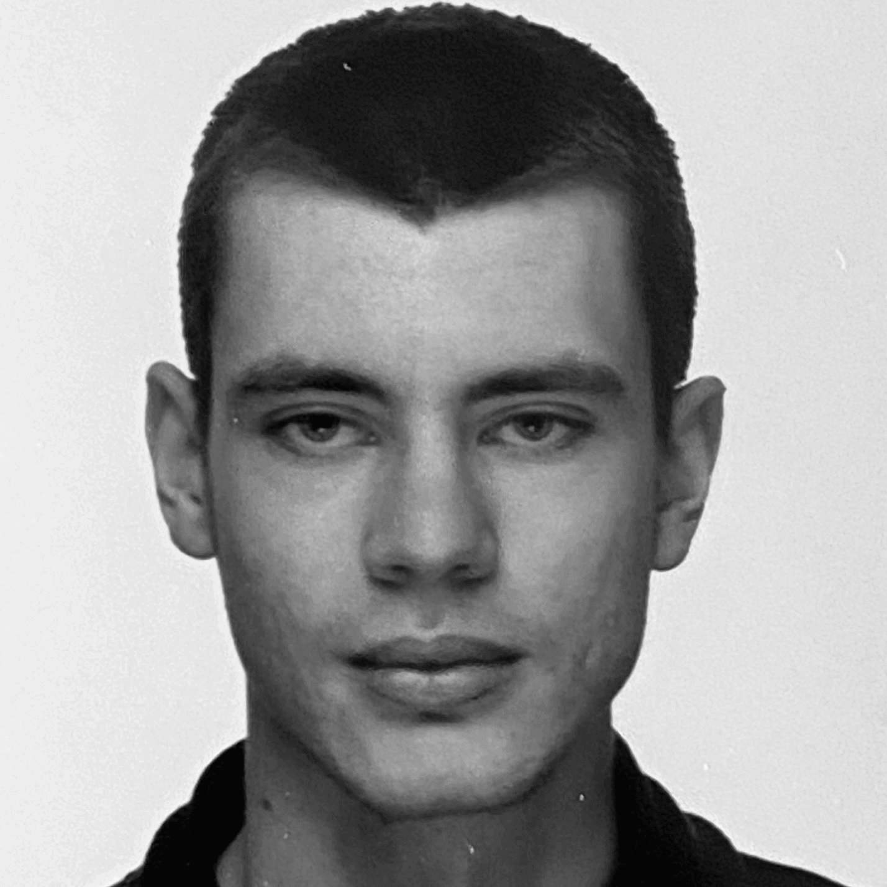
Sr. Software Engineer
Building serverless products that scale efficiently, remain maintainable, and are secure by design.
I'm Aaron Randell, originally from New Zealand and now based in the Netherlands. I’m a software engineer specializing in serverless systems, focused on reducing technical debt and building scalable, maintainable solutions.
Outside of work, I enjoy experimenting with digital art, contributing to open-source projects, gaming, and going to the gym.
Languages: Python, Golang
Frontend: React, Vite
Databases: Postgres, CockroachDB, MySQL
Cloud & Deployment: AWS, GCP, Scaleway, Docker, Git
Core Competencies: Scalable serverless architecture, event-driven systems, cloud-native deployment, distributed system design, high-performance and secure backend engineering.
Jul 2025 - Present | Woerden, Netherlands
May 2022 - Jul 2025 | Ede, Netherlands
July 2020 - March 2022 | Denver, Colorado
Python API library designed for maintainable code and robust interactions, adopted by multiple developers.
Real-time platform ingesting and processing WebSocket data streams for user-specific insights.
Transforms WebSocket streams into webhooks, removing the need for persistent client connections.
Serverless orchestration layer for rate-limiting, inspired by Cloud Tasks.
A collection of digital experiments exploring color theory and motion with NumPy, PIL and OpenCV.
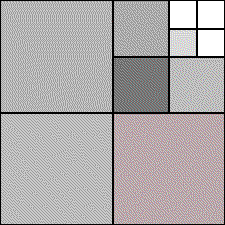
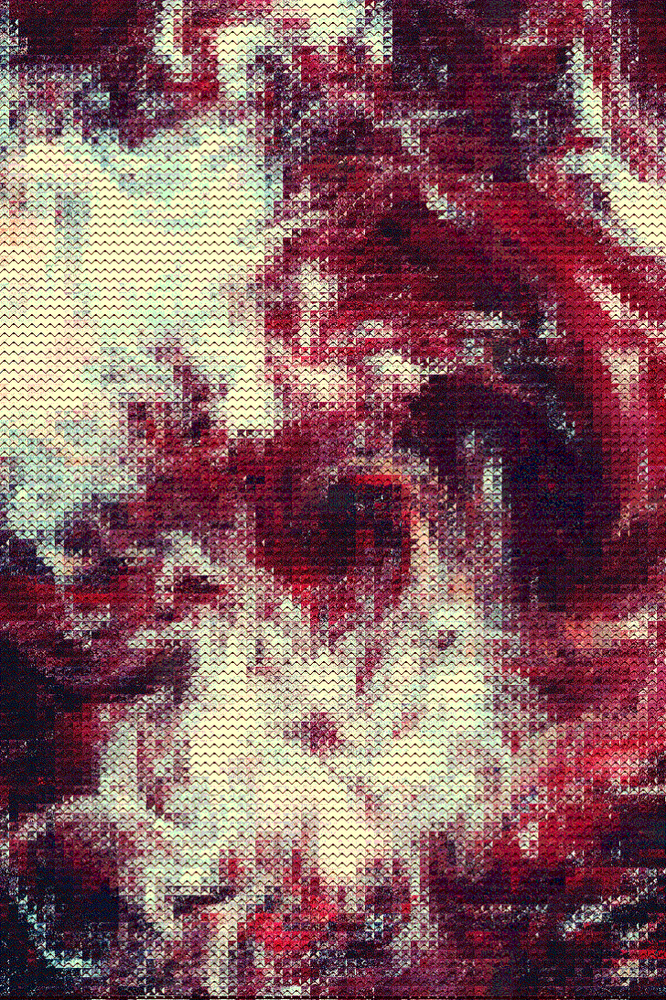
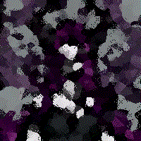
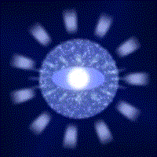
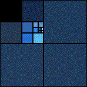
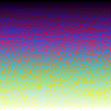
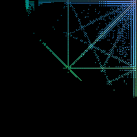
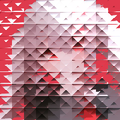
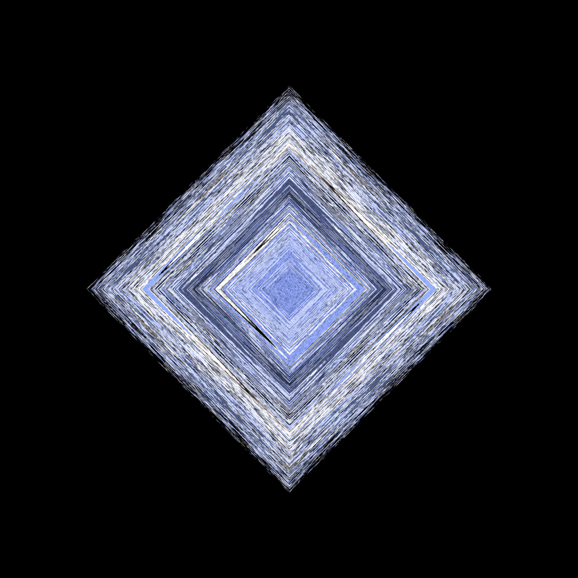
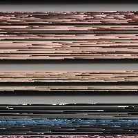